Editing Resources
Monokle allows you to edit resource manifests either in a Source Editor or a Form-based Editor which hides the underlying YAML complexity.
Editing Resources
When editing resources (not files), the editor is schema-aware for all native Kubernetes resources, which provides auto-complete (Ctrl-Space) and context-sensitive hover documentation.
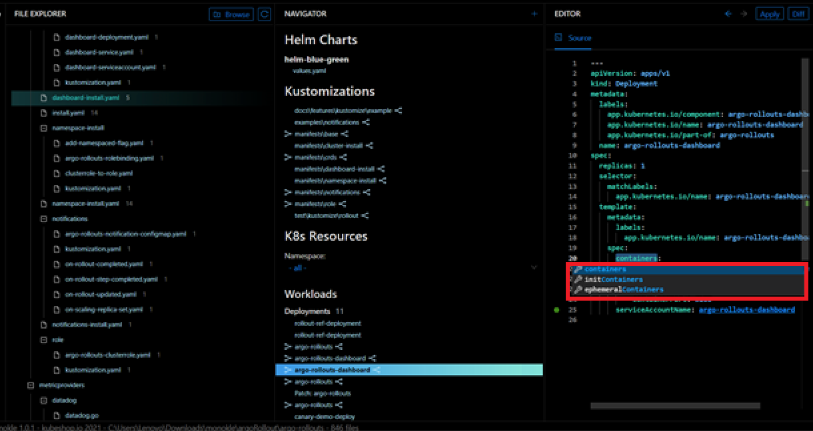
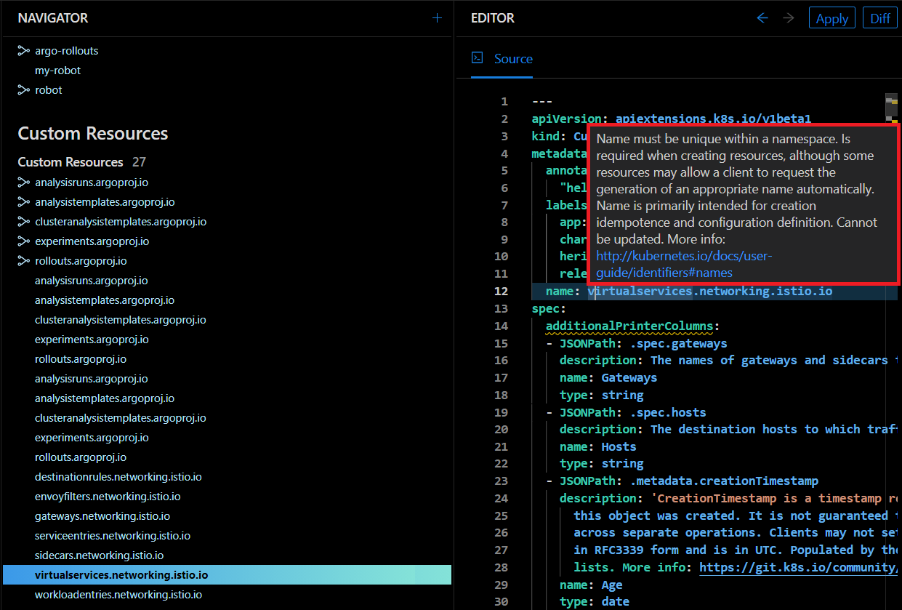
When editing a resource, click on the document icon at the top right of the Editor pane to open the corresponding Kubernetes documentation in a browser window:
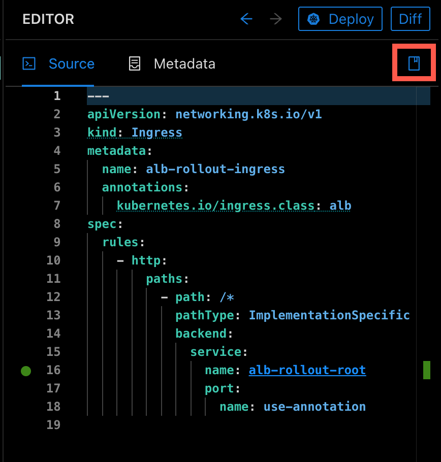
Working with Multiple Resources
Select multiple resources by clicking the checkbox to the left of the resource name. Below, two resources are selected and the Delete or Deploy actions are available for both resources.
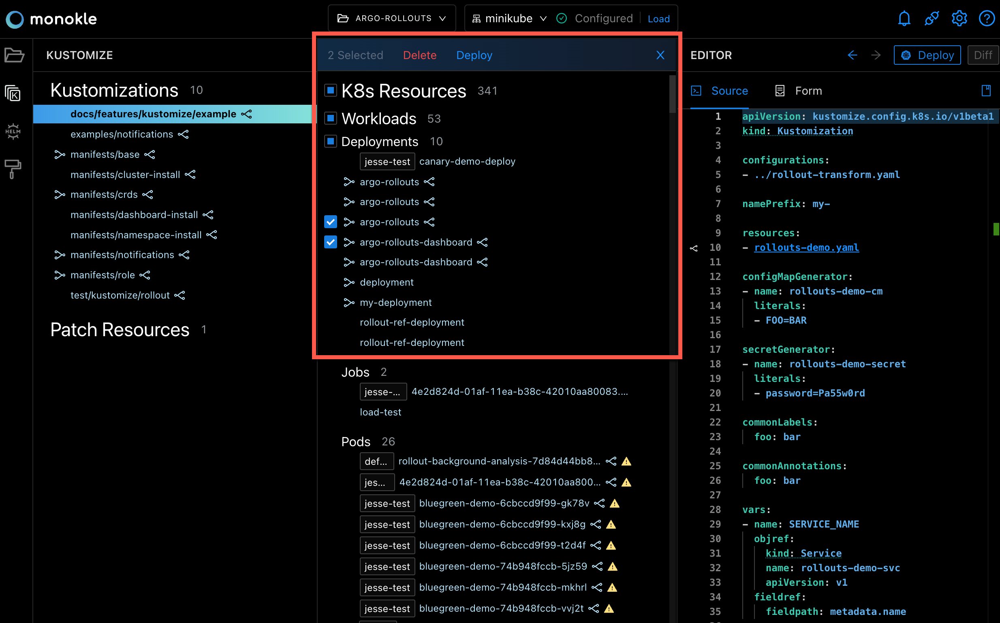
Add a Resource
While using Monokle, you can directly add new K8s resources. Once you have browsed and added your project folder, click on the New Resource button at the top of the navigator to launch the Add New Resource dialog.
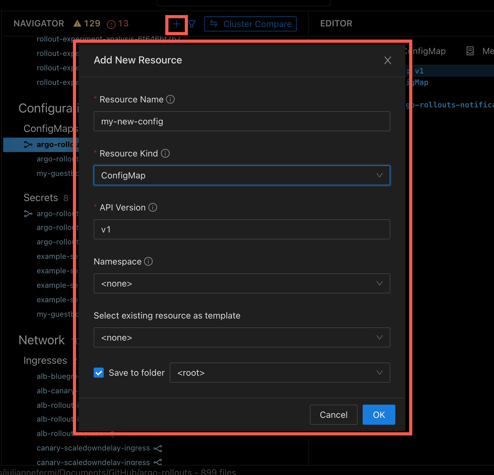
For adding resources to new or existing files in the navigator, click on the Save button at the top-right corner of the interface.
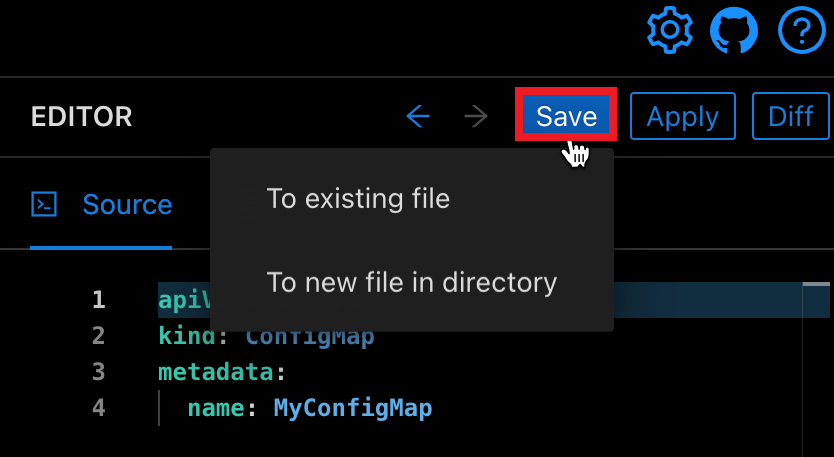
While creating a resource, it is possible to select an existing resource as a template from the drop-down menu.
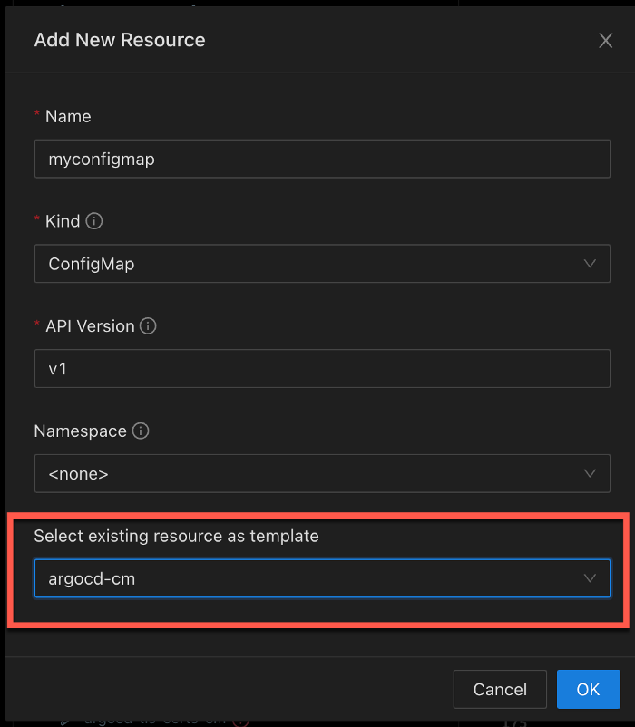
Edit Resources in a Cluster
You can easily view and edit resources from clusters. After making changes in a resource, you can quickly deploy them back to the cluster.
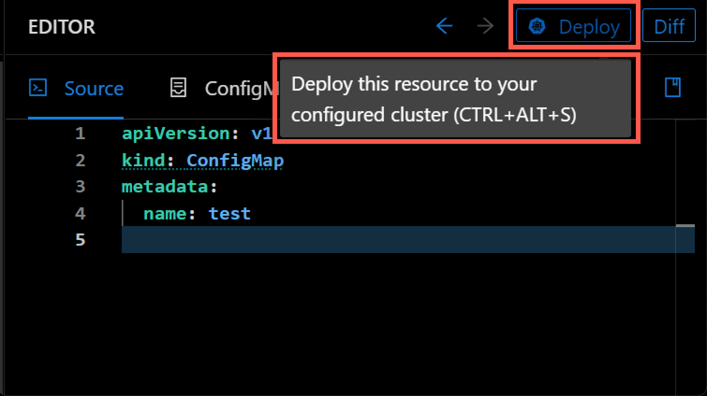
Saving Changes
The Save button on top of the editor will be enabled only if valid changes have been made - invalid YAML will not be savable. Saving a resource will update the containing file correspondingly and recalculate all affected ingoing/outging links for the resource.
Editing Files
When editing files directly by selecting them in the File Explorer, the editor will not show any links or provide context-sensitive editing functionality.
Navigator Resource Options
Click the ellipsis to the right of a resource name to see the options available:
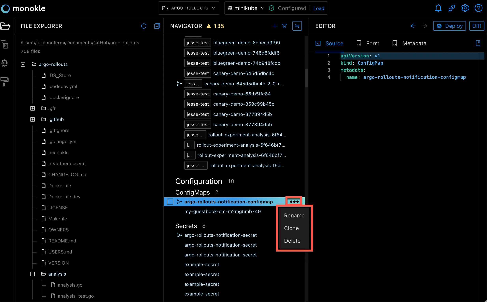
Unknown Resources will display in the Navigator but only have the Rename and Delete options:
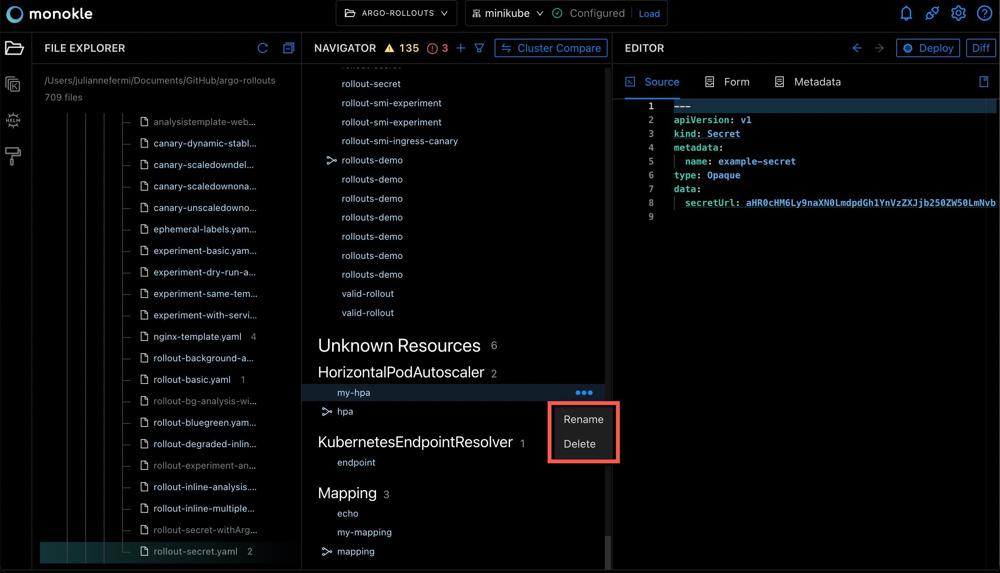
Rename a Resource
You can rename resources and update all the references associated with that resource to ensure the integrity of that link.

Clone a Resource
You can use the Clone action to create a new resource by using existing resources as a template.
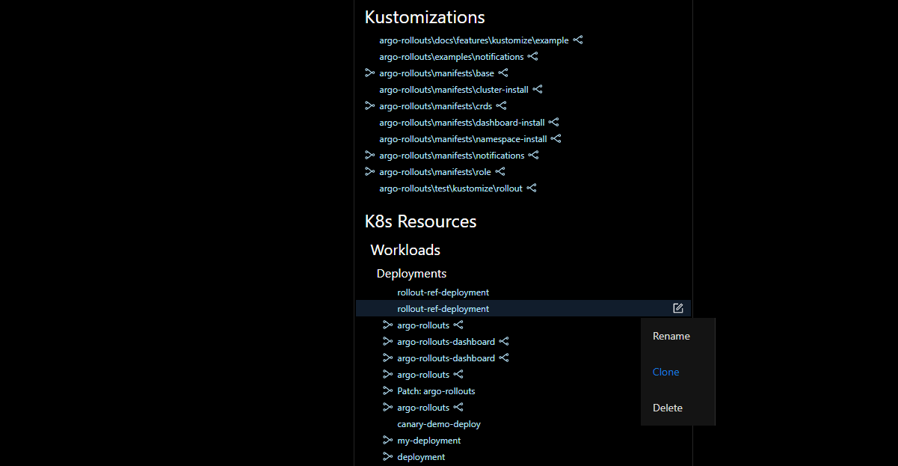
Delete a Resource
You can use the Delete action in the cluster mode to delete the resource from the actual cluster.
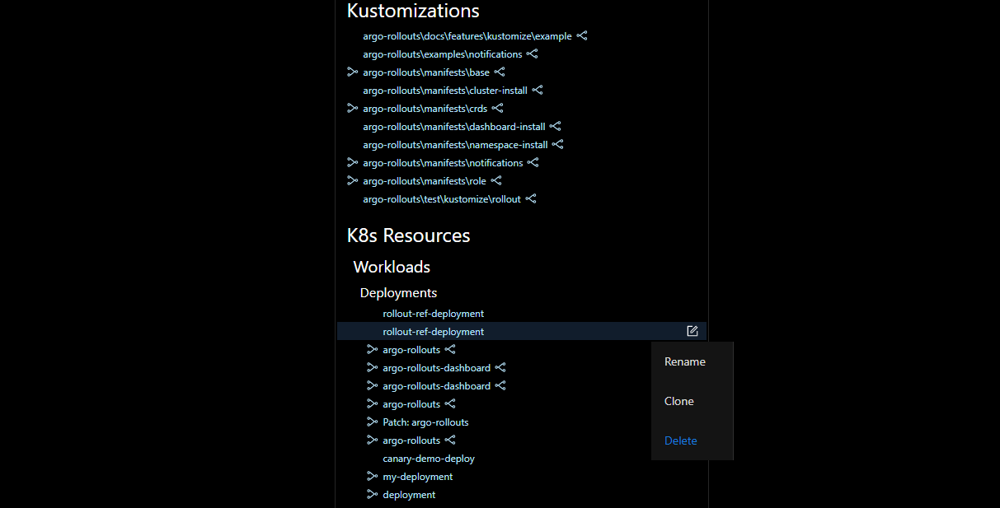
Secret Resources
Kubernetes secret resources are shown in the Navigator. A Secret is an object storing sensitive pieces of data such as usernames, passwords, tokens, and keys.
Highlight the secret resource in the Navigator and the source will be displayed in the Editor pane. There, you can hover over the encoded secret value to see the decoded value (for username in the example below):
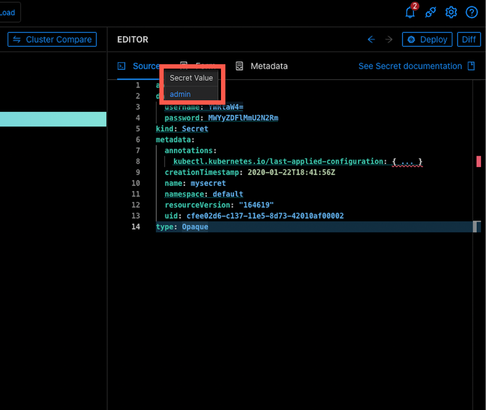